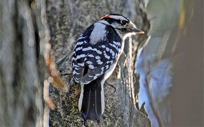

Podfamilija Picinae koja pripada familiji Picidae, iz reda Piciformes, obuhvata više od 180 vrsta ptica koje zovemo detlicima. Glavne odlike ove veoma rasprostanjene grupe ptica su veoma oštar, jak i prav kljun u obliku dleta, po kome su detlici i dobili ime na našem jeziku. Jak kljun i veoma dugacak jezik u obliku strele omogucavaju detlicima da iz stabala i grana drveca izvlace najrazlicitije insekte, larve i crve. Na nogama detlica su se tokom evolucije formirala dva para "prstiju", prednji i zadnji. Velika vecina detlica provede ceo svoj život po krošnjama drveca iako im nedostaje sposobnost koju imaju skoro sve ptice. Detlici ne mogu da vise naglavce na horizontalnim granama držeci se kandžama. Pomenuti zadnji par prstiju je glavni krivac za ovaj nedostatak. Medutim, detlici poseduju "alat" kojim se ostale ptice ne mogu pohvaliti.
| Detlic |
|---|
|  |